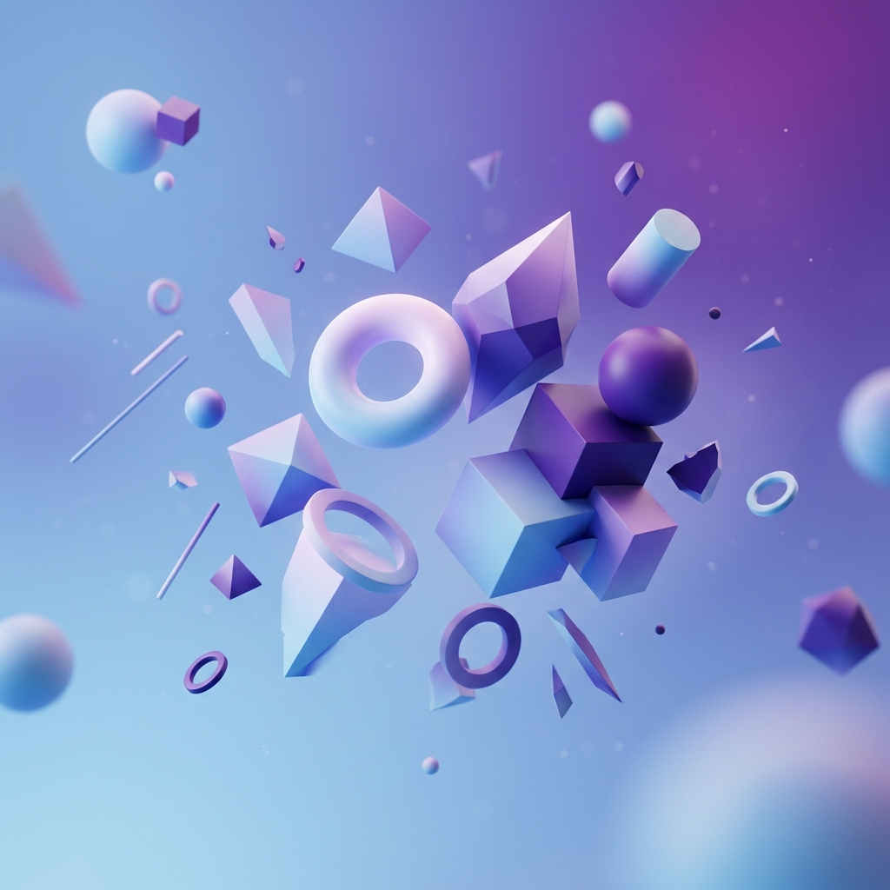

Crafting immersive digital experiences with cutting-edge technologies and elegant design.
View My WorkI'm a Computer Science graduate who enjoys building backend systems and understanding how applications work under the hood. I'm especially interested in APIs, data processing, and system design, and like projects where performance and correctness matter.
I've worked with Python, Go, and React, and enjoy learning new technologies by applying them in practical projects.
I'm looking for a graduate or junior role where I can grow as an engineer while working in a collaborative, engineering-focused team.
HTML, CSS, JavaScript, TypeScript, React, Vue
Node.js, Python, Java, Go, Rust, Sqlite, Redis, PostgreSQL, MySQL
Express, Django, Flask, Spring Boot, Gin, FastAPI
A fast Go CLI that takes a lecture transcript, and appends them to a JSON file grouped by course.
Adresses the problem of taking notes from lectures, and transforms lecture transcripts into structured, detailed AI notes. Grouped by course, synced to Joplin, and searchable via a built-in AI Assistant. GitHub
A tool that analyzes social networks and provides insights into the structure and dynamics of the network.
A social network analysis tool that turns raw group chat exports into an interactive graph and exposes that analysis as an API and MCP server, allowing easy integration for AI models. Drop in a chat file, get back a structured map of who influences who, who brokers information between groups, and what the team is talking about. GitHub
A web app designed to detect whether text is AI generated or not.
The AI Content Detector (AI-CD) is a web application designed to help users determine whether a given text is likely to have been generated by an AI or written by a human. The application consists of a Flask-based backend API for AI content detection and a React-based frontend for user interaction. GitHub
Interested in working together? Let's build something extraordinary.
Email: mubashir.dawood4@gmail.com
GitHub: github.com/MubashirD04
Send a Message